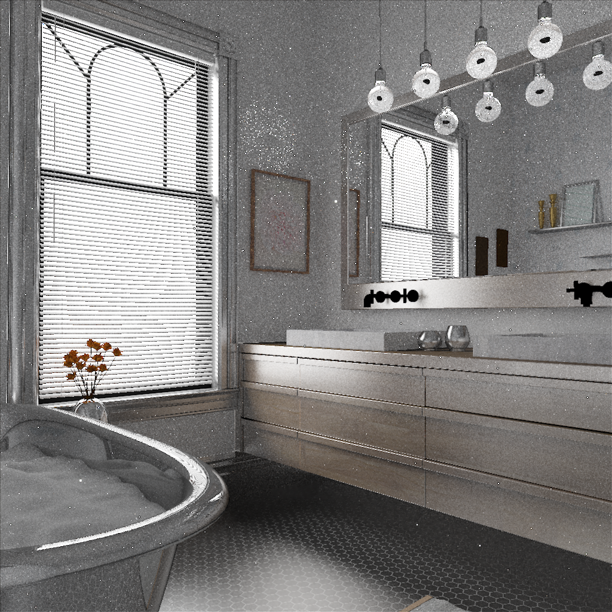
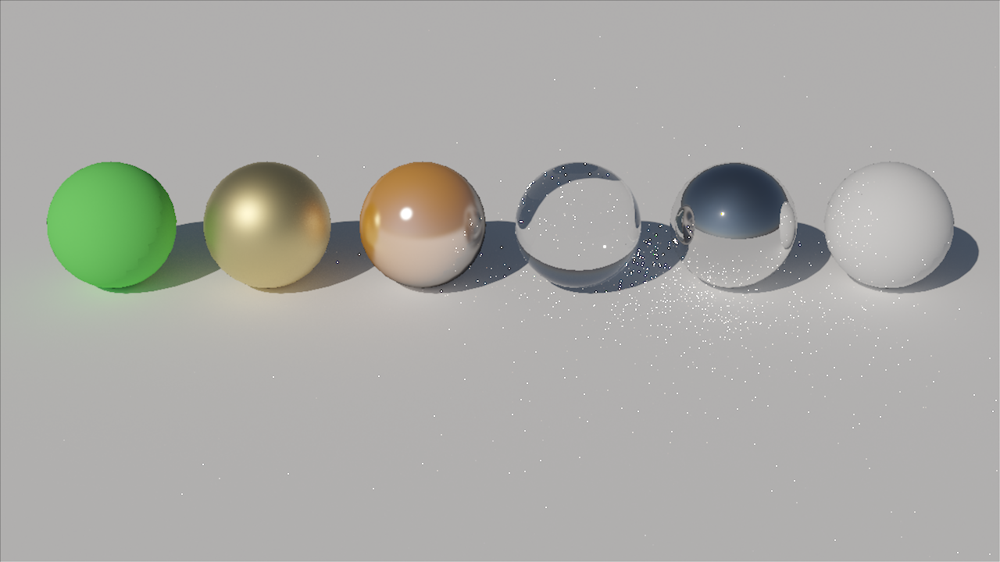

Game Engineering & Graphics Programming
一款基于 DirectX 12 开发的第一人称 3D 追逐游戏，展示了多个实时渲染技术的综合应用。游戏包含数据驱动的加载管线、实例化渲染（用于大规模草地和树木的生成）、计算着色器驱动的粒子系统、地形系统、动态骨骼动画（带交叉淡入淡出），以及基于 AABB 的碰撞检测机制。
为了解决频繁修改着色器代码带来的繁琐绑定问题，引擎实现了在运行时动态读取并编译 Shader 源码。通过深入整合 DirectX 的 Shader Reflection 系统，引擎能够自动分析着色器资源需求（如顶点和计算着色器中的 Structured Buffer 被正确识别并绑定），实现管线状态对象 (PSO) 与资源的自动化映射与绑定，极大提升了渲染架构的灵活性与开发效率。
一个通过路径追踪模拟光线传输的渲染器。系统支持基于微表面理论的导体等材质，并采用启发式表面积 (SAH) 构建的 BVH 加速结构，支持重要性采样环境贴图，大幅提升了复杂场景的渲染效率。
为了解决直接光源采样与 BSDF 采样在不同粗糙度下的高方差问题，渲染器采用了多重重要性采样 (MIS) 技术，平衡两种采样策略的权重，从而降低了渲染过程中的噪点。此外，BVH 加速结构采用 SAH (Surface Area Heuristic) 算法进行分割，使得渲染复杂室内场景时的遍历开销降低。

Bathroom 场景

材质展示场景
开发了一款基于位置动力学 (Position Based Dynamics, PBD) 及扩展版本 (Extended PBD, XPBD) 的实时布料模拟系统。与传统的力学求解器（如隐式欧拉方法）相比，PBD 通过直接在位置层面迭代求解几何约束，确保了模拟过程的无条件稳定性，消除了由于大步长导致的系统崩溃问题。
传统的 PBD 算法中，材质的刚度（Stiffness）会受到迭代次数和时间步长的严重影响，导致难以进行物理精准的参数调节。项目中引入了 XPBD 算法，通过将物理刚度转化为柔顺度（Compliance）并引入拉格朗日乘子，实现了刚度与迭代次数的完全解耦。
针对现代多核 CPU 进行深度优化的软件光栅化器。通过引入 AVX2 SIMD 指令集、数据结构重构 (SoA)以及基于工作窃取 (Work-Stealing) 算法的 Tile-based 多线程渲染架构，大幅突破了内存带宽和同步开销的瓶颈。
光栅化的最大瓶颈在于逐像素的重心坐标计算和着色。通过将帧缓冲区数据格式对齐为 32-bit 的 RGBA，我利用 256-bit 的 AVX2 寄存器在单条指令中同时处理并写入 8 个像素的边缘函数与深度测试。
轻量级场景下，向量化计算带来的指令级并行收益。